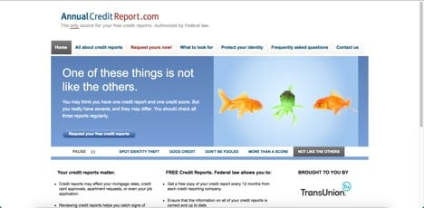

Credit Score: Definition, Factors, and How to Improve It
- Credit Reports and Scores | USAGov
WalletHub is the best credit score site because it offers free scores that are updated on a daily basis. Sure, we’re obviously biased in saying that. But it’s hard to compete with the latest info, personalized credit analysis and custom credit card recommendations. - Get Your Credit Score | 100% Free, Easy and Online!
The credit score model was created by the Fair Isaac Corporation, also known as FICO, and it is used by financial institutions. While other credit-scoring systems exist, the FICO score is by far ... - Free Credit Score - No Credit Card Required - Experian
What is a good Credit Score? There are multiple credit scoring models which means that a good credit score can be different depending on the scoring model being used. Credit scores can range between 300 and 850. A good credit score generally starts at 700, and a score of 800 or above is considered excellent. - Credit Score: Definition, Factors, and How to Improve It
‘Credit Score’ in India is a defining aspect for all those applying for loans or credit cards at banks and other financial institutions. Credit aspirants are judged on this score which is assigned to them by credit bureaus such as CIBIL, Experian, Equifax, CRIF High Mark, etc.The score is a numerical representation of your creditworthiness. - Free Credit Score & Free Credit Reports With Monitoring ...
Credit score calculated based on FICO ® Score 8 model. Your lender or insurer may use a different FICO ® Score than FICO ® Score 8, or another type of credit score altogether. Learn more. - 2020’s Best Credit Score Site - WalletHub
The credit card offers that appear on this site are from credit card companies from which we may receive compensation. This compensation may impact how and where products appear on this site (including, for example, the order in which they appear). ... Improvements are calculated from your baseline credit score, as determined by Credit Sesame ... - creditscore.com: Free Credit Score - FICO Score
If you have specific questions about the accessibility of this site, or need assistance with using this site, contact us. Please call Member Support at (888) 882-9277 or email legal@creditkarma.com - Best Free Credit Score Websites | Cafe Credit
Check your free CIBIL Score and Report and apply for a customized loan. Banks check your CIBIL Score before approving your loan. - Credit Score - Check Free CIBIL Score, Get Credit Score ...
Depending on the credit reporting agency, your score will be between zero and either 1,000 or 1,200. The score relates to a five-point scale (excellent, very good, good, average and below average). This helps a lender work out how risky it is for them to lend to you. - How Can I Check My Credit Scores? | Equifax®
FICO ® Scores are developed by Fair Isaac Corporation. The FICO ® Score provided by ConsumerInfo.com, Inc., also referred to as Experian Consumer Services ("ECS"), in Experian CreditWorks SM, Credit Tracker SM and/or your free Experian membership (as applicable) is based on FICO ® Score 8, unless otherwise noted. Many but not all lenders use FICO ® Score 8.

Investopedia uses cookies to provide you with a great user experience. By using Investopedia, you accept our use of cookies. x Education General Dictionary Economics Corporate Finance Roth IRA Stocks Mutual Funds ETFs 401(k) Investing/Trading Investing Essentials Fundamental Analysis Portfolio Management Trading Essentials Technical Analysis Risk Management Markets News Company News Markets News Trading News Political News Trends Popular Stocks Apple (AAPL) Tesla (TSLA) Amazon (AMZN) AMD (AMD) Facebook (FB) Netflix (NFLX) Simulator Simulator Create an Account Join a Game My Simulator My Game Create a Game Your Money Personal Finance Wealth Management Budgeting/Saving Banking Credit Cards Home Ownership Retirement Planning Taxes Insurance Reviews & Ratings Best Online Brokers Best Savings Accounts Best Home Warranties Best Credit Cards Best Personal Loans Best Student Loans Best Life Insurance Best Auto Insurance Advisors Your Practice Practice Management Continuing Education Financial Advisor Careers Investopedia 100 Wealth Management Portfolio Construction Financial Planning Academy Popular Courses Investing for Beginners Become a Day Trader Trading for Beginners Technical Analysis Courses by Topic All Courses Trading Courses Investing Courses Financial Professional Courses Part Of Debt Management Guide Explore The Guide Overview Understanding Debt Overview What Are the Main Categories of Debt? Consumer Debt Credit Card Debt Unsecured Debt Unsecured vs. Secured Debts How the Debt Collection Agency Business Works Fair Debt Collection Practices Act (FDCPA) How Debt Affects Your Credit Overview Credit Score How Long Does it Take for Items to Show Up on Your Credit Report? What Affects Your Credit Score What Lenders Look at on Your Credit Report How to Get Out of Debt Overview Understanding Debt Relief Paying Off Debt With a Balance Transfer Debt Settlement: A Guide for Negotiation What's the Difference Between Debt Consolidation and Debt Settlement? Debt Consolidation Debt Settlement: Cheapest Way to Get Out of Debt? Best Personal Loans for Debt Consolidation Debt Management Resources Overview 8 Alternatives To a Credit Card Cash Advance Debt Collection: Know Your Rights Best Credit Repair Companies Credit & Debt Building Credit
Credit Score
By Julia Kagan Reviewed By Thomas Brock Updated Apr 9, 2020What Is a Credit Score?
A credit score is a number between 300–850 that depicts a consumer s creditworthiness. The higher the score, the better a borrower looks to potential lenders. A credit score is based on credit history : number of open accounts, total levels of debt, and repayment history, and other factors. Lenders use credit scores to evaluate the probability that an individual will repay loans in a timely manner.
Key Takeaways
A credit score plays a key role in a lender s decision to offer credit. The FICO scoring system is used by many financial institutions. Factors considered in credit scoring include repayment history, types of loans, length of credit history, and an individual s total debt. One metric used in calculating a credit score is credit utilization or the percentage of available credit currently being used. It is not always advisable to close a credit account that is not being used since doing so can lower a person s credit score. The credit score model was created by the Fair Isaac Corporation, also known as FICO , and it is used by financial institutions. While other credit-scoring systems exist, the FICO score is by far the most commonly used. There are a number of ways to improve an individual s score, including repaying loans on time and keeping debt low.
How Credit Scores Work
A credit score can significantly affect your financial life. It plays a key role in a lender s decision to offer you credit. People with credit scores below 640, for example, are generally considered to be subprime borrowers . Lending institutions often charge interest on subprime mortgages at a rate higher than a conventional mortgage in order to compensate themselves for carrying more risk. They may also require a shorter repayment term or a co-signer for borrowers with a low credit score.
Conversely, a credit score of 700 or above is generally considered good and may result in a borrower receiving a lower interest rate, which results in their paying less money in interest over the life of the loan. Scores greater than 800 are considered excellent. While every creditor defines its own ranges for credit scores, the average FICO score range is often used:
Excellent: 800 to 850 Very Good: 740 to 799 Good: 670 to 739 Fair: 580 to 669 Poor: 300 to 579Your credit score, a statistical analysis of your creditworthiness, directly affects how much or how little you might pay for any lines of credit you take out.
A person’s credit score may also determine the size of an initial deposit required to obtain a smartphone, cable service or utilities, or to rent an apartment. And lenders frequently review borrowers scores, especially when deciding whether to change an interest rate or credit limit on a credit card.
1:34What Is A Credit Score?
Credit Score Factors: How Your Score Is Calculated
There are three major credit reporting agencies in the United States ( Experian, Equifax , and Transunion), which report, update, and store consumers credit histories. While there can be differences in the information collected by the three credit bureaus, there are five main factors evaluated when calculating a credit score:
Payment history Total amount owed Length of credit history Types of credit New creditPayment history counts for 35% of a credit score and shows whether a person pays their obligations on time. Total amount owed counts for 30% and takes into account the percentage of credit available to a person that is currently being used, which is known as credit utilization . Length of credit history counts for 15%, with longer credit histories being considered less risky, as there is more data to determine payment history.
The type of credit used counts for 10% of a credit score and shows if a person has a mix of installment credit, such as car loans or mortgage loans, and revolving credit, such as credit cards. New credit also counts for 10%, and it factors in how many new accounts a person has, how many new accounts they have applied for recently, which result in credit inquiries , and when the most recent account was opened.
Advisor Insight
Kathryn Hauer, CFP®, EA
Wilson David Investment Advisors, Aiken, SC
If you have many credit cards and want to close some that you do not use, closing credit cards can indeed lower your score.
Instead of closing them, gather up the cards you don t use. Keep them in a safe place in separate, labeled envelopes. Go online to access and check each of your cards. For each, ensure that there is no balance and that your address, email address, and other contact info are correct. Also make sure that you don t have autopay set up on any of them. In the section where you can have alerts, make sure you have your email address or phone in there. Make it a point to regularly check that no fraudulent activity occurs on them since you aren t going to be using them. Set yourself a reminder to check them all every six months or every year to make sure there have been no charges on them and that nothing unusual has happened.
How to Improve Your Credit Score
When information is updated on a borrower’s credit report, their credit score changes and can rise or fall based on new information. Here are some ways a consumer can improve their credit score:
Pay your bills on time: Six months of on-time payments is required to see a noticeable difference in your score. Up your credit line: If you have credit card accounts, call and inquire about a credit increase. If your account is in good standing, you should be granted an increase in your credit limit. It is important not to spend this amount so that you maintain a lower credit utilization rate. Don’t close a credit card account: If you are not using a certain credit card, it is best to stop using it instead of closing the account. Depending on the age and credit limit of a card, it can hurt your credit score if you close the account. Say, for instance, that you have $1,000 in debt and a $5,000 credit limit split evenly between two cards. As the account is, your credit utilization rate is 20%, which is good. However, closing one of the cards would put your credit utilization rate at 40%, which will negatively affect your score. Work with one of the best credit repair companies : If you don t have the time to improve your credit score, credit repair companies will negotiate with your creditors and the three credit agencies on your behalf, in exchange for a monthly fee.The Bottom Line
Your credit score is one number that can cost or save you a lot of money in your lifetime. An excellent score can land you lower interest rates, meaning you will pay less for any line of credit you take out. But it s up to you, the borrower, to make sure your credit remains strong so you can have access to more opportunities to borrow if you need to.
Article Sources
Investopedia requires writers to use primary sources to support their work. These include white papers, government data, original reporting, and interviews with industry experts. We also reference original research from other reputable publishers where appropriate. You can learn more about the standards we follow in producing accurate, unbiased content in our editorial policy.Experian. " Understanding Credit Scores ." Accessed August 1, 2020.
Experian. " My Credit Score ." Accessed August 1, 2020.
Experian. " What Affects Your Credit Scores ?" Accessed August 1, 2020.
myFICO. " How to repair your credit and improve your FICO® Scores ." Accessed August 1, 2020.
myFICO. " The History of the FICO® Score ." Accessed August 1, 2020.
Experian. " What Is a Good Credit Score ?" Accessed August 1, 2020.
Experian. " How to Improve Your Credit Score ." Accessed August 1, 2020.
Compare Accounts Advertiser Disclosure × The offers that appear in this table are from partnerships from which Investopedia receives compensation. Provider Name DescriptionRelated Terms
What Are FICO 10 and FICO 10T? FICO 10 and FICO 10T are new FICO credit scoring models, to be introduced in 2020. FICO 10T is unique in using trended data to calculate credit scores. more Cut-Off Score A cut-off score is a minimum credit score an individual may have and still receive a loan. more What Is FICO 08? FICO 08 is the most widely-used version of the consumer credit-rating model developed by the Fair Isaac Corp. more What Is FICO 09? FICO 09 is an updated FICO credit scoring model. Here's what FICO 09 means and how it's calculated. more Creditworthiness Creditworthiness is how a lender determines that you will default on your debt obligations or how worthy you are to receive new credit. more FICO Score Definition A FICO score is a type of credit score that makes up a substantial portion of the credit report that lenders use to assess an applicant's credit risk. more Partner LinksRelated Articles
Building Credit
Can You Hit the Highest Credit Score?
Building Credit
Credit Score Ranges: What Do They Mean?
Building Credit
FICO Credit Scores 101: Everything You Need to Know
Credit Cards
Should You Close Your Credit Card?
Bad Credit
Can You Have Too Many Credit Cards?
Credit & Debt
How FICO Scores Are Calculated
About Us Terms of Use Dictionary Editorial Policy Advertise News Privacy Policy Contact Us Careers California Privacy Notice # A B C D E F G H I J K L M N O P Q R S T U V W X Y Z Investopedia is part of the Dotdash publishing family.

Mauris vulputate dolor
Rutrum fermentum nibh in augue praesent urna congue rutrum.
Etiam posuere